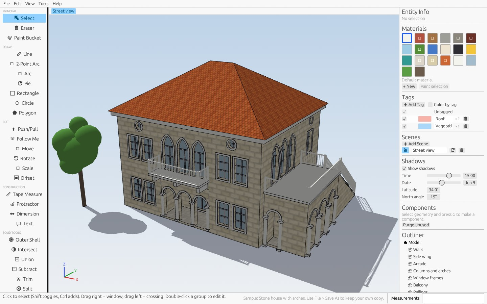
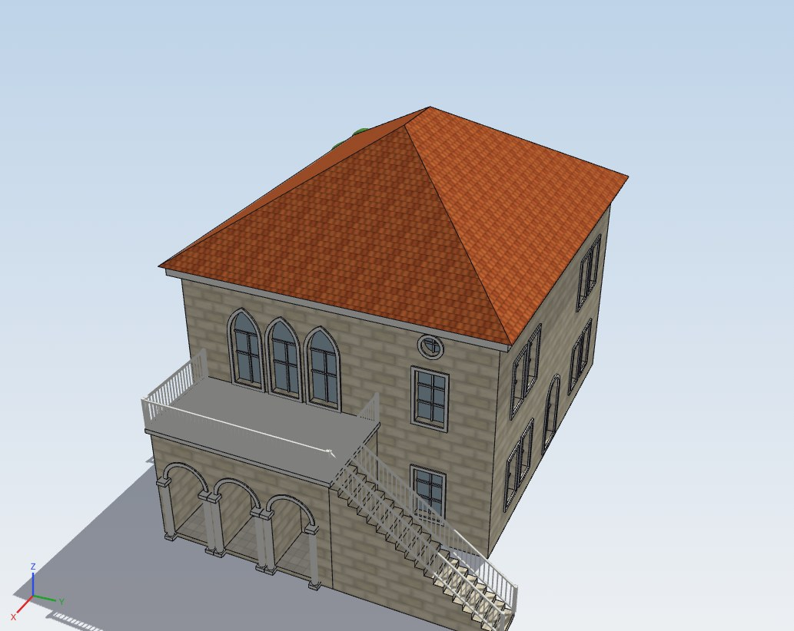
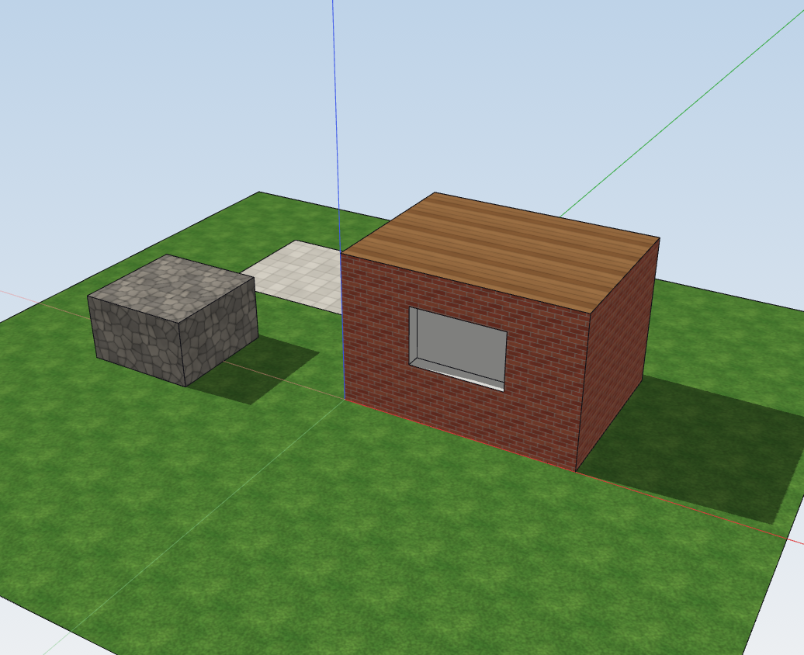
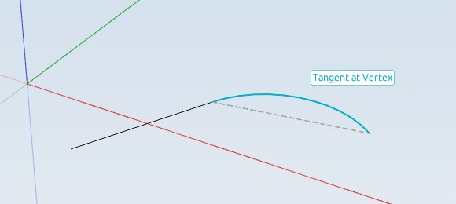
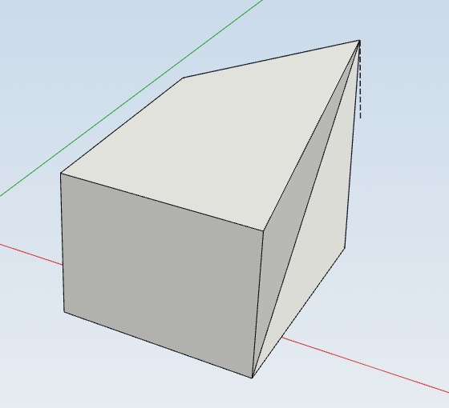

OpenSketch is a SketchUp-style modeler: draw on the ground or on any face, then push and pull shapes into 3D. Groups, components, solid tools, dimensions, textures and sun shadows. Written in Rust, MIT licensed.
Latest release · What's new

This house comes with the app: open it from File ▸ Samples, take it apart and make it your own. Its walls were pulled up from a rectangle and every window pushed in, the same way you would model it by hand.


Click, move, click. The tools guess what you mean and show it as you go, so shapes come out right the first time.


The geometry is "sticky" the way SketchUp users expect: lines split faces, closed loops become faces, and shapes drawn on a face can be pushed in, pulled out or punched through.
Pull faces into solids, push pockets into walls, punch holes through, and let flush pushes merge back. Type an exact distance at any time.
Lines, arcs, rectangles, circles and polygons with endpoint, midpoint, axis, guide and intersection snapping.
Edit in place, reuse components, and glue windows and doors to walls so they cut their own openings.
Union, Subtract, Intersect, Trim, Split and Outer Shell on closed groups, plus Intersect Faces and Follow Me.
Tape Measure guides, Protractor, linear and radial dimensions, leader text, tags and animated scenes.
Built-in brick, wood, stone and tile textures or your own images, with shadows from a sun set by date, time and location.
No installer: download, extract and run. Files are saved as .osk, and models can be exported to OBJ (with textures) and STL.
The downloads aren't code-signed yet. On Windows, if SmartScreen appears, choose More info ▸ Run anyway. On macOS, right-click the file and choose Open the first time. Or build it yourself with Rust: cargo run --release
OpenSketch is young and contributions of every size are welcome: code, bug reports, testing on your machine, docs and ideas.